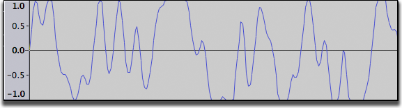

Tutorial - Making a Test Recording
From Audacity Manual
Step 1: Turn on monitoring
Click on the downward pointing arrow beside the microphone symbol in the Recording Meter and select "Start Monitoring".

Step 2: Start the recording
Talk or play at a normal volume and watch the Recording Meter.
Try to aim for a maximum peak of around –6 dB (or 0.5 if you have your meter set to linear rather than dB). You can always boost the level later after you have completed your editing.
Step 3: Adjust the level
Adjust the recording volume with the right-hand Recording Volume Slider (by the microphone symbol).
You want the meter to get close to the right-hand edge without hitting it during the loudest parts (-6 dB is a good target).
Note that if you are using a USB microphone or USB adapter the recording volume control may have no effect or may be greyed out and set to maximum. If you cannot get a "good" reading on the recording meter (doesn't get close to the right edge - too quiet; or goes all the way to the right edge - too loud), go back to your system sound control panel and adjust the volume there.
Step 4: Test recording
You are now ready to do a test recording.
Get everything ready (microphone in place, guitar in hand) and click the Record button  in Transport Toolbar. Record for few seconds while talking or playing, then click the Stop button
in Transport Toolbar. Record for few seconds while talking or playing, then click the Stop button  .
.
Have a look at the recorded waveform - there should be no clipping visible. Clipping is bad - this is when the volume of the source that was sent to Audacity is louder than Audacity can record. The result is that the tops and bottoms of the recorded wave are chopped off ("clipped"). The illustrations below show a properly-recorded waveform and a clipped waveform. Note that these images from Audacity show the waveform when zoomed in - the total time displayed is about 0.004 seconds!
- A properly recorded waveform

- A clipped waveform
- 
You can also check for clipping by clicking on . Audacity will display vertical red bars in the waveform wherever it detects clipping.

Click on to remove the test recording.
If clipping occurred turn down the recording level a bit and try again. If no clipping occurred you are ready for the real thing!
As stated above, try to aim for a maximum peak of around –6 dB (or 0.5 if you have your meter set to linear rather than dB).
Tip: Enlarging the Meter Toolbar by clicking and dragging on the toolbar helps considerably with this task. See Resizing and Undocking
Links
> Forward to: Tutorial - Recording and Editing